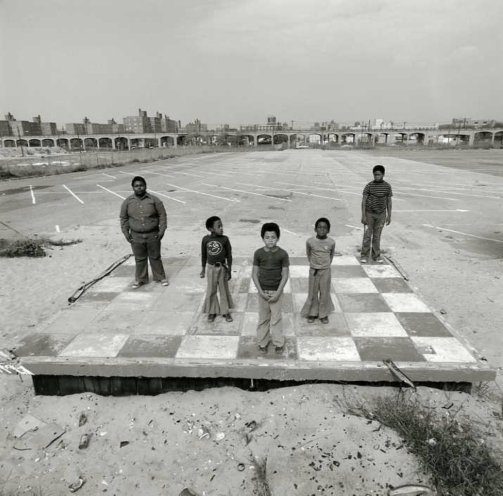

Boys on Checker Floor, Far Rockaway, NY, Arthur Tress, 1973, Brooklyn Museum: Photography
Size: sheet: 14 × 11 in. (35.6 × 27.9 cm) image: 10 × 10 in. (25.4 × 25.4 cm)
Medium: Gelatin silver photographhttps://www.brooklynmuseum.org/opencollection/objects/189213